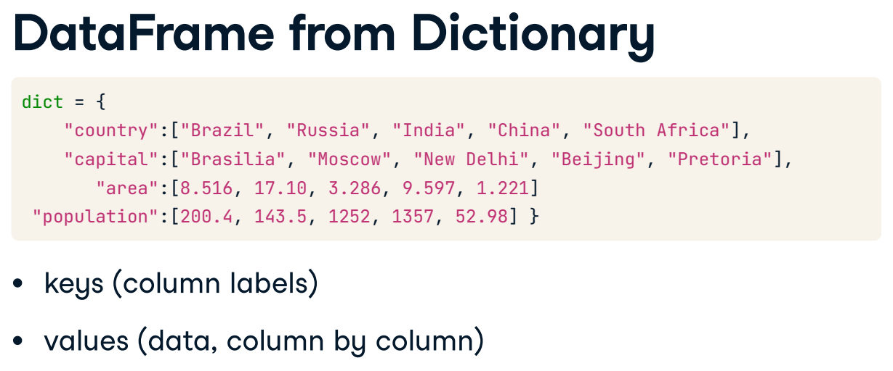

Pandas#
Pandas was built from numpy
Pandas Advantages:
fast
short code lines
multiple file types
smart alingnment
how to import? import pandas as pd
Pandas data types#
Pandas has two data types:
Pandas series Pandas DataFrame
Pandas series:#
Pandas dataframe#
Create a pandas DataFrame#
To create a pandas DataFrame, you can use many methods:
DataFrame from a dictionary: pd.DataFrame(dictionary_name)
Create a Dataframe from a Dictionary#

Use the pre-defined lists to create a dictionary called my_dict. There should be three key value pairs:
key ‘country’ and value names.
key ‘drives_right’ and value dr.
key ‘cars_per_cap’ and value cpc.
Use pd.DataFrame() to turn your dict into a DataFrame called cars.
# Pre-defined lists
names = ['United States', 'Australia', 'Japan', 'India', 'Russia', 'Morocco', 'Egypt']
dr = [True, False, False, False, True, True, True]
cpc = [809, 731, 588, 18, 200, 70, 45]
# Import pandas as pd
import pandas as pd
# Create dictionary my_dict with three key:value pairs: my_dict
my_dict = {"country":names, "drives_right":dr, "cars_per_cap":cpc}
# Build a DataFrame cars from my_dict: cars
cars = pd.DataFrame(my_dict)
# Print cars
print(cars)
---------------------------------------------------------------------------
ModuleNotFoundError Traceback (most recent call last)
Cell In[1], line 7
4 cpc = [809, 731, 588, 18, 200, 70, 45]
6 # Import pandas as pd
----> 7 import pandas as pd
9 # Create dictionary my_dict with three key:value pairs: my_dict
10 my_dict = {"country":names, "drives_right":dr, "cars_per_cap":cpc}
ModuleNotFoundError: No module named 'pandas'
Now, if you want to assign a row label you use the .index() method
# Definition of row_labels
row_labels = ['US', 'AUS', 'JPN', 'IN', 'RU', 'MOR', 'EG']
# Specify row labels of cars
cars.index = row_labels
# Print cars again
print(cars)
country drives_right cars_per_cap
US United States True 809
AUS Australia False 731
JPN Japan False 588
IN India False 18
RU Russia True 200
MOR Morocco True 70
EG Egypt True 45
Create a DataFrame from CSV.#
To create a DataFrame from a CSV file, use pd.read_csv(“route”)
example: cars = pd.read_csv(“cars.csv”)
import pandas as pd
#import the bestsellers-with-categories.csv
mydata = pd.read_csv("bestsellers-with-categories.csv")
#pd.read_csv() receives an argument sep="", which is the separator
#pd.read_csv
print(mydata)
Name \
0 10-Day Green Smoothie Cleanse
1 11/22/63: A Novel
2 12 Rules for Life: An Antidote to Chaos
3 1984 (Signet Classics)
4 5,000 Awesome Facts (About Everything!) (Natio...
.. ...
545 Wrecking Ball (Diary of a Wimpy Kid Book 14)
546 You Are a Badass: How to Stop Doubting Your Gr...
547 You Are a Badass: How to Stop Doubting Your Gr...
548 You Are a Badass: How to Stop Doubting Your Gr...
549 You Are a Badass: How to Stop Doubting Your Gr...
Author User Rating Reviews Price Year Genre
0 JJ Smith 4.7 17350 8 2016 Non Fiction
1 Stephen King 4.6 2052 22 2011 Fiction
2 Jordan B. Peterson 4.7 18979 15 2018 Non Fiction
3 George Orwell 4.7 21424 6 2017 Fiction
4 National Geographic Kids 4.8 7665 12 2019 Non Fiction
.. ... ... ... ... ... ...
545 Jeff Kinney 4.9 9413 8 2019 Fiction
546 Jen Sincero 4.7 14331 8 2016 Non Fiction
547 Jen Sincero 4.7 14331 8 2017 Non Fiction
548 Jen Sincero 4.7 14331 8 2018 Non Fiction
549 Jen Sincero 4.7 14331 8 2019 Non Fiction
[550 rows x 7 columns]
Create a DataFrame from JSON.#
myjson_data = pd.read_json("hpcharactersdataraw.json")
print(myjson_data)
Name Link \
0 Mrs. Abbott https://www.hp-lexicon.org/character/abbott-fa...
1 Hannah Abbott https://www.hp-lexicon.org/character/abbott-fa...
2 Abel Treetops https://www.hp-lexicon.org/character/abel-tree...
3 Euan Abercrombie https://www.hp-lexicon.org/character/abercromb...
4 Aberforth Dumbledore https://www.hp-lexicon.org/character/dumbledor...
... ... ...
1935 Georgi Zdravko https://www.hp-lexicon.org/character/georgi-zd...
1936 Zograf https://www.hp-lexicon.org/character/zograf/
1937 Zonko https://www.hp-lexicon.org/character/zonko/
1938 Valentina Vázquez https://www.hp-lexicon.org/character/valentina...
1939 Zygmunt Budge https://www.hp-lexicon.org/character/zygmunt-b...
Descr Gender Species/Race \
0 Mrs. Abbott was the mother of Hannah Abbott, a... Female Witch
1 Hannah Abbott is a Hufflepuff student in Harry... Female Witch
2 Abel Treetops was a wizard from Cincinnati who... Male Wizard
3 Euan Abercrombie was a small boy with prominen... Male Wizard
4 Aberforth Dumbledore was a tall, thin, grumpy-... Male Wizard
... ... ... ...
1935 Georgi Zdravko played Keeper for the Bulgarian... Male Wizard
1936 Zograf played Keeper for the Bulgarian Nationa... NaN Wizard
1937 Founder(?) of Zonko’s Joke Shop. Possibly a re... NaN Unknown
1938 Valentina Vázquez was President of the Argenti... Female Witch
1939 Zygmunt Budge is considered to be one of the m... Male Wizard
Blood School \
0 Muggle-born Unknown
1 Half-blood Hogwarts - Hufflepuff
2 Unknown Unknown
3 Unknown Hogwarts - Gryffindor
4 Half-blood Hogwarts - Student
... ... ...
1935 Unknown Unknown
1936 Unknown Unknown
1937 Unknown Unknown
1938 Unknown Unknown
1939 Unknown Hogwarts - Student
Profession
0 Unknown
1 Landlady of the Leaky Cauldron
2 Unknown
3 Unknown
4 Barman
... ...
1935 Quidditch player (Seeker)
1936 Quidditch player (Keeper)
1937 Unknown
1938 President of the Argentinian Council of Magic
1939 Potions Master, Potioneer, Inventor, Author
[1940 rows x 8 columns]
Data accessing in Pandas#
Column accessing#
use DataFrame_Name[[“Column_name1”, “Column_name2”, …, “Column_name_n”]] to print the columns that you wish from the dataframe
example:
given the dataframe “cars”
print(cars)
country drives_right cars_per_cap
US United States True 809
AUS Australia False 731
JPN Japan False 588
IN India False 18
RU Russia True 200
MOR Morocco True 70
EG Egypt True 45
i would like to select the column country
print( cars[["country"]] )
#what would be this data type?
print( type(cars[["country"]]) )
country
US United States
AUS Australia
JPN Japan
IN India
RU Russia
MOR Morocco
EG Egypt
<class 'pandas.core.frame.DataFrame'>
Now let´s access the column country and the column cars_per_cap
print( cars[["country", "cars_per_cap"]] )
country cars_per_cap
US United States 809
AUS Australia 731
JPN Japan 588
IN India 18
RU Russia 200
MOR Morocco 70
EG Egypt 45
Row accessing#
#say i want to access rows from 2nd to 4th
print( cars[1:4] )
country drives_right cars_per_cap
AUS Australia False 731
JPN Japan False 588
IN India False 18
Row accessing by Row Label -> loc[]#
loc[] is used to show data based on the row label & the column label
print(cars)
country drives_right cars_per_cap
US United States True 809
AUS Australia False 731
JPN Japan False 588
IN India False 18
RU Russia True 200
MOR Morocco True 70
EG Egypt True 45
given the previous database, print the row for Australia
print( cars.loc[["AUS"]] )
country drives_right cars_per_cap
AUS Australia False 731
You can access multiple rows at the same time
print( cars.loc[["AUS", "JPN"]] )
country drives_right cars_per_cap
AUS Australia False 731
JPN Japan False 588
Finally, you can access rows & columns at the same time
example:
from the database cars, select the rows country and cars_per_cap
print( cars.loc[ ["AUS", "JPN"] , ["country", "cars_per_cap"] ] )
country cars_per_cap
AUS Australia 731
JPN Japan 588
filtering with loc#
searching with loc given a condition, will give you a list of conditions.
condition = cars.loc[:, ["country"]] == "Japan"
Row accessing by Row index -> iloc[]#
iloc[] is used to show data based on the row index & the columns index
print(cars)
country drives_right cars_per_cap
US United States True 809
AUS Australia False 731
JPN Japan False 588
IN India False 18
RU Russia True 200
MOR Morocco True 70
EG Egypt True 45
given the previous database, print the row for Australia
print( cars.iloc[[1]] )
country drives_right cars_per_cap
AUS Australia False 731
You can access multiple rows at the same time
print( cars.iloc[[1,2]] )
country drives_right cars_per_cap
AUS Australia False 731
JPN Japan False 588
Finally, you can access rows & columns at the same time
example:
from the database cars, select the rows country and cars_per_cap
print( cars.iloc[ [1,2] , [0, 2] ] )
country cars_per_cap
AUS Australia 731
JPN Japan 588
Add or delete data with pandas#
import pandas as pd
#let's import the data
my_data = pd.read_csv("bestsellers-with-categories.csv")
print((my_data.head(2)))
Name Author User Rating Reviews Price \
0 10-Day Green Smoothie Cleanse JJ Smith 4.7 17350 8
1 11/22/63: A Novel Stephen King 4.6 2052 22
Year Genre
0 2016 Non Fiction
1 2011 Fiction
Delete columns - df.drop()#
#axis = 0 for rows & axis = 1 for columns. Since i want to delete columns, i put axis = 1
print("-----modified output:-----")
print ( my_data.drop(["Name"], axis=1).head(2) )
#notice that the original dataset still contains the column
print("-----original data:-----")
print(my_data.head(2))
-----modified output:-----
Author User Rating Reviews Price Year Genre
0 JJ Smith 4.7 17350 8 2016 Non Fiction
1 Stephen King 4.6 2052 22 2011 Fiction
-----original data:-----
Name Author User Rating Reviews Price \
0 10-Day Green Smoothie Cleanse JJ Smith 4.7 17350 8
1 11/22/63: A Novel Stephen King 4.6 2052 22
Year Genre
0 2016 Non Fiction
1 2011 Fiction
at this point, the column was deleted from the output but not from the original dataframe. in order for you to delete from the original dataset, use the ** inplace = TRUE ** argument
my_data.drop("Name", axis = 1, inplace=True)
#notice that the column has been removed now from the dataset
print(my_data.head(2))
Author User Rating Reviews Price Year Genre
0 JJ Smith 4.7 17350 8 2016 Non Fiction
1 Stephen King 4.6 2052 22 2011 Fiction
Delete rows - df.drop()#
The process is the same than for deleting columns, the only difference is the argument axis = 0 in this case
print("-----original dataframe:-----")
print(my_data.head(5))
#delete the first row
print("-----without first row:-----")
print (my_data.drop(0, axis = 0).head(5))
-----original dataframe:-----
Author User Rating Reviews Price Year Genre
0 JJ Smith 4.7 17350 8 2016 Non Fiction
1 Stephen King 4.6 2052 22 2011 Fiction
2 Jordan B. Peterson 4.7 18979 15 2018 Non Fiction
3 George Orwell 4.7 21424 6 2017 Fiction
4 National Geographic Kids 4.8 7665 12 2019 Non Fiction
-----without first row:-----
Author User Rating Reviews Price Year Genre
1 Stephen King 4.6 2052 22 2011 Fiction
2 Jordan B. Peterson 4.7 18979 15 2018 Non Fiction
3 George Orwell 4.7 21424 6 2017 Fiction
4 National Geographic Kids 4.8 7665 12 2019 Non Fiction
5 George R. R. Martin 4.4 12643 11 2011 Fiction
Add columns#
import pandas as pd
import numpy as np
#to add a column to our dataframe, we must use np.nan
#original dataset
print(my_data.head(5))
#let's add a column called "Country"
#nan is a no numeric value
my_data["Country"] = np.nan
#print the modified dataframe
print(my_data.head(5))
Author User Rating Reviews Price Year Genre
0 JJ Smith 4.7 17350 8 2016 Non Fiction
1 Stephen King 4.6 2052 22 2011 Fiction
2 Jordan B. Peterson 4.7 18979 15 2018 Non Fiction
3 George Orwell 4.7 21424 6 2017 Fiction
4 National Geographic Kids 4.8 7665 12 2019 Non Fiction
Author User Rating Reviews Price Year Genre \
0 JJ Smith 4.7 17350 8 2016 Non Fiction
1 Stephen King 4.6 2052 22 2011 Fiction
2 Jordan B. Peterson 4.7 18979 15 2018 Non Fiction
3 George Orwell 4.7 21424 6 2017 Fiction
4 National Geographic Kids 4.8 7665 12 2019 Non Fiction
Country
0 NaN
1 NaN
2 NaN
3 NaN
4 NaN
adding an index to the data#
#first count the rows in your DataFrame
print( my_data.shape[0] )
#now create a numpy array with that length
arrayayay = np.arange(0, my_data.shape[0])
#now create the column that will assign the item to the data and assign that array to it
#(yes, you can assign numpy arrays as column values)
my_data["indexx"] = arrayayay
print(my_data)
550
Author User Rating Reviews Price Year Genre \
0 JJ Smith 4.7 17350 8 2016 Non Fiction
1 Stephen King 4.6 2052 22 2011 Fiction
2 Jordan B. Peterson 4.7 18979 15 2018 Non Fiction
3 George Orwell 4.7 21424 6 2017 Fiction
4 National Geographic Kids 4.8 7665 12 2019 Non Fiction
.. ... ... ... ... ... ...
545 Jeff Kinney 4.9 9413 8 2019 Fiction
546 Jen Sincero 4.7 14331 8 2016 Non Fiction
547 Jen Sincero 4.7 14331 8 2017 Non Fiction
548 Jen Sincero 4.7 14331 8 2018 Non Fiction
549 Jen Sincero 4.7 14331 8 2019 Non Fiction
Country indexx
0 NaN 0
1 NaN 1
2 NaN 2
3 NaN 3
4 NaN 4
.. ... ...
545 NaN 545
546 NaN 546
547 NaN 547
548 NaN 548
549 NaN 549
[550 rows x 8 columns]
Add rows#
To add rows in your dataframe, use array.append(row)
#let's append the data to the list
print(my_data.append(my_data))
Author User Rating Reviews Price Year Genre \
0 JJ Smith 4.7 17350 8 2016 Non Fiction
1 Stephen King 4.6 2052 22 2011 Fiction
2 Jordan B. Peterson 4.7 18979 15 2018 Non Fiction
3 George Orwell 4.7 21424 6 2017 Fiction
4 National Geographic Kids 4.8 7665 12 2019 Non Fiction
.. ... ... ... ... ... ...
545 Jeff Kinney 4.9 9413 8 2019 Fiction
546 Jen Sincero 4.7 14331 8 2016 Non Fiction
547 Jen Sincero 4.7 14331 8 2017 Non Fiction
548 Jen Sincero 4.7 14331 8 2018 Non Fiction
549 Jen Sincero 4.7 14331 8 2019 Non Fiction
Country indexx
0 NaN 0
1 NaN 1
2 NaN 2
3 NaN 3
4 NaN 4
.. ... ...
545 NaN 545
546 NaN 546
547 NaN 547
548 NaN 548
549 NaN 549
[1100 rows x 8 columns]
Deal with Null Data#
Let’s create a dataframe with null values
import numpy as np
import pandas as pd
dicttt = {
"Col1":[1, 2, 3, np.nan],
"Col2":[4, np.nan, 6, 7],
"col3":["a", "b", "c", None]
}
df = pd.DataFrame(dicttt)
print(df)
Col1 Col2 col3
0 1.0 4.0 a
1 2.0 NaN b
2 3.0 6.0 c
3 NaN 7.0 None
identify null data in a DF#
#isnull() will help you to identify null values
print("-----Boolean dataframe: ------")
print( df.isnull() )
#if you want to turn those values into numeric:
print("-----Numeric dataframe: ------")
print( df.isnull()*1 )
-----Boolean dataframe: ------
Col1 Col2 col3
0 False False False
1 False True False
2 False False False
3 True False True
-----Numeric dataframe: ------
Col1 Col2 col3
0 0 0 0
1 0 1 0
2 0 0 0
3 1 0 1
replace null values#
replace for a string#
with .fillna() you can replace null values for whatever
#i will replace null values for the word "missing"
print( df.fillna("missing") )
Col1 Col2 col3
0 1.0 4.0 a
1 2.0 missing b
2 3.0 6.0 c
3 missing 7.0 missing
replace for column mean#
print( df.fillna(df.mean()) )
Col1 Col2 col3
0 1.0 4.000000 a
1 2.0 5.666667 b
2 3.0 6.000000 c
3 2.0 7.000000 None
replace null values for an interpolation#
print( df.interpolate() )
Col1 Col2 col3
0 1.0 4.0 a
1 2.0 5.0 b
2 3.0 6.0 c
3 3.0 7.0 None
delete null values#
this will delete the entire row
print( df.dropna() )
Col1 Col2 col3
0 1.0 4.0 a
2 3.0 6.0 c
Filtering with conditions#
#let's import the dataset
import pandas as pd
data = pd.read_csv("bestsellers-with-categories.csv")
#first 5 rows
print(data.head(5))
Name \
0 10-Day Green Smoothie Cleanse
1 11/22/63: A Novel
2 12 Rules for Life: An Antidote to Chaos
3 1984 (Signet Classics)
4 5,000 Awesome Facts (About Everything!) (Natio...
Author User Rating Reviews Price Year Genre
0 JJ Smith 4.7 17350 8 2016 Non Fiction
1 Stephen King 4.6 2052 22 2011 Fiction
2 Jordan B. Peterson 4.7 18979 15 2018 Non Fiction
3 George Orwell 4.7 21424 6 2017 Fiction
4 National Geographic Kids 4.8 7665 12 2019 Non Fiction
Filtering structure is:
ColumnName > 3 DataFrame[ DataFrame[“ColumnName”] > 3 ]
ColumnName = 5 DataFrame[ DataFrame[“ColumnName”] == 5 ]
example:
filter those with rating greater than or equal to 4.8
print( data[ data["User Rating"] >= 4.8 ] )
Name \
4 5,000 Awesome Facts (About Everything!) (Natio...
19 Alexander Hamilton
30 Barefoot Contessa Foolproof: Recipes You Can T...
32 Becoming
33 Becoming
.. ...
541 Wonder
542 Wonder
543 Wonder
544 Wonder
545 Wrecking Ball (Diary of a Wimpy Kid Book 14)
Author User Rating Reviews Price Year Genre
4 National Geographic Kids 4.8 7665 12 2019 Non Fiction
19 Ron Chernow 4.8 9198 13 2016 Non Fiction
30 Ina Garten 4.8 1296 24 2012 Non Fiction
32 Michelle Obama 4.8 61133 11 2018 Non Fiction
33 Michelle Obama 4.8 61133 11 2019 Non Fiction
.. ... ... ... ... ... ...
541 R. J. Palacio 4.8 21625 9 2014 Fiction
542 R. J. Palacio 4.8 21625 9 2015 Fiction
543 R. J. Palacio 4.8 21625 9 2016 Fiction
544 R. J. Palacio 4.8 21625 9 2017 Fiction
545 Jeff Kinney 4.9 9413 8 2019 Fiction
[179 rows x 7 columns]
example
filter those which Genre is Fiction
print( data[ data["Genre"] == "Fiction" ] )
Name Author \
1 11/22/63: A Novel Stephen King
3 1984 (Signet Classics) George Orwell
5 A Dance with Dragons (A Song of Ice and Fire) George R. R. Martin
6 A Game of Thrones / A Clash of Kings / A Storm... George R. R. Martin
7 A Gentleman in Moscow: A Novel Amor Towles
.. ... ...
541 Wonder R. J. Palacio
542 Wonder R. J. Palacio
543 Wonder R. J. Palacio
544 Wonder R. J. Palacio
545 Wrecking Ball (Diary of a Wimpy Kid Book 14) Jeff Kinney
User Rating Reviews Price Year Genre
1 4.6 2052 22 2011 Fiction
3 4.7 21424 6 2017 Fiction
5 4.4 12643 11 2011 Fiction
6 4.7 19735 30 2014 Fiction
7 4.7 19699 15 2017 Fiction
.. ... ... ... ... ...
541 4.8 21625 9 2014 Fiction
542 4.8 21625 9 2015 Fiction
543 4.8 21625 9 2016 Fiction
544 4.8 21625 9 2017 Fiction
545 4.9 9413 8 2019 Fiction
[240 rows x 7 columns]
Filtering with multiple conditions#
For multiple conditions, it is recommended to assign the conditions to an object
example: print those which genre is fiction and were published after 2018
Fiction = data["Genre"] == "Fiction"
Publishedafter2018 = data["Year"] >= 2018
print(data[ Fiction & Publishedafter2018])
Name Author \
13 A Wrinkle in Time (Time Quintet) Madeleine L'Engle
41 Brown Bear, Brown Bear, What Do You See? Bill Martin Jr.
53 Crazy Rich Asians (Crazy Rich Asians Trilogy) Kevin Kwan
66 Dear Zoo: A Lift-the-Flap Book Rod Campbell
81 Dog Man and Cat Kid: From the Creator of Capta... Dav Pilkey
83 Dog Man: Brawl of the Wild: From the Creator o... Dav Pilkey
84 Dog Man: Brawl of the Wild: From the Creator o... Dav Pilkey
85 Dog Man: Fetch-22: From the Creator of Captain... Dav Pilkey
86 Dog Man: For Whom the Ball Rolls: From the Cre... Dav Pilkey
87 Dog Man: Lord of the Fleas: From the Creator o... Dav Pilkey
101 Fahrenheit 451 Ray Bradbury
126 Giraffes Can't Dance Giles Andreae
127 Giraffes Can't Dance Giles Andreae
144 Goodnight Moon Margaret Wise Brown
145 Goodnight Moon Margaret Wise Brown
155 Harry Potter and the Goblet of Fire: The Illus... J. K. Rowling
179 If Animals Kissed Good Night Ann Whitford Paul
207 Last Week Tonight with John Oliver Presents A ... Jill Twiss
220 Little Fires Everywhere Celeste Ng
251 Oh, the Places You'll Go! Dr. Seuss
252 Oh, the Places You'll Go! Dr. Seuss
266 Player's Handbook (Dungeons & Dragons) Wizards RPG Team
267 Player's Handbook (Dungeons & Dragons) Wizards RPG Team
287 Ready Player One: A Novel Ernest Cline
303 Strange Planet (Strange Planet Series) Nathan W. Pyle
397 The Guardians: A Novel John Grisham
401 The Hate U Give Angie Thomas
435 The Meltdown (Diary of a Wimpy Kid Book 13) Jeff Kinney
452 The Pout-Pout Fish Deborah Diesen
454 The President Is Missing: A Novel James Patterson
462 The Silent Patient Alex Michaelides
481 The Very Hungry Caterpillar Eric Carle
482 The Very Hungry Caterpillar Eric Carle
488 The Wonderful Things You Will Be Emily Winfield Martin
489 The Wonderful Things You Will Be Emily Winfield Martin
490 The Wonky Donkey Craig Smith
491 The Wonky Donkey Craig Smith
509 To Kill a Mockingbird Harper Lee
529 What Should Danny Do? (The Power to Choose Ser... Adir Levy
534 Where the Crawdads Sing Delia Owens
545 Wrecking Ball (Diary of a Wimpy Kid Book 14) Jeff Kinney
User Rating Reviews Price Year Genre
13 4.5 5153 5 2018 Fiction
41 4.9 14344 5 2019 Fiction
53 4.3 6143 8 2018 Fiction
66 4.8 10922 5 2018 Fiction
81 4.9 5062 6 2018 Fiction
83 4.9 7235 4 2018 Fiction
84 4.9 7235 4 2019 Fiction
85 4.9 12619 8 2019 Fiction
86 4.9 9089 8 2019 Fiction
87 4.9 5470 6 2018 Fiction
101 4.6 10721 8 2018 Fiction
126 4.8 14038 4 2018 Fiction
127 4.8 14038 4 2019 Fiction
144 4.8 8837 5 2018 Fiction
145 4.8 8837 5 2019 Fiction
155 4.9 7758 18 2019 Fiction
179 4.8 16643 4 2019 Fiction
207 4.9 11881 13 2018 Fiction
220 4.5 25706 12 2018 Fiction
251 4.9 21834 8 2018 Fiction
252 4.9 21834 8 2019 Fiction
266 4.8 16990 27 2018 Fiction
267 4.8 16990 27 2019 Fiction
287 4.6 22536 12 2018 Fiction
303 4.9 9382 6 2019 Fiction
397 4.5 13609 14 2019 Fiction
401 4.8 9947 11 2018 Fiction
435 4.8 5898 8 2018 Fiction
452 4.8 9784 5 2018 Fiction
454 4.3 10191 18 2018 Fiction
462 4.5 27536 14 2019 Fiction
481 4.9 19546 5 2018 Fiction
482 4.9 19546 5 2019 Fiction
488 4.9 8842 10 2018 Fiction
489 4.9 8842 10 2019 Fiction
490 4.8 30183 4 2018 Fiction
491 4.8 30183 4 2019 Fiction
509 4.8 26234 7 2019 Fiction
529 4.8 8170 13 2019 Fiction
534 4.8 87841 15 2019 Fiction
545 4.9 9413 8 2019 Fiction
Column Information#
know columns data type#
# .info() will tell you the data type of each column
print( data.info() )
<class 'pandas.core.frame.DataFrame'>
RangeIndex: 550 entries, 0 to 549
Data columns (total 7 columns):
# Column Non-Null Count Dtype
--- ------ -------------- -----
0 Name 550 non-null object
1 Author 550 non-null object
2 User Rating 550 non-null float64
3 Reviews 550 non-null int64
4 Price 550 non-null int64
5 Year 550 non-null int64
6 Genre 550 non-null object
dtypes: float64(1), int64(3), object(3)
memory usage: 30.2+ KB
None
change the column data type#
#choose the column and use .astype() to select your desired data type
data["Name"] = data["Name"].astype("string")
data["Author"] = data["Author"].astype("string")
data["Genre"] = data["Genre"].astype("string")
#and i will check the data type again
data.info()
<class 'pandas.core.frame.DataFrame'>
RangeIndex: 550 entries, 0 to 549
Data columns (total 7 columns):
# Column Non-Null Count Dtype
--- ------ -------------- -----
0 Name 550 non-null string
1 Author 550 non-null string
2 User Rating 550 non-null float64
3 Reviews 550 non-null int64
4 Price 550 non-null int64
5 Year 550 non-null int64
6 Genre 550 non-null string
dtypes: float64(1), int64(3), string(3)
memory usage: 30.2 KB
know column main statistics#
# .describe() will tell you main descriptive variables
print( data.describe() )
User Rating Reviews Price Year
count 550.000000 550.000000 550.000000 550.000000
mean 4.618364 11953.281818 13.100000 2014.000000
std 0.226980 11731.132017 10.842262 3.165156
min 3.300000 37.000000 0.000000 2009.000000
25% 4.500000 4058.000000 7.000000 2011.000000
50% 4.700000 8580.000000 11.000000 2014.000000
75% 4.800000 17253.250000 16.000000 2017.000000
max 4.900000 87841.000000 105.000000 2019.000000
see last registers from columns#
# .tail() will show you the last n registers. n is the argument
print( data.tail(2) )
Name Author \
548 You Are a Badass: How to Stop Doubting Your Gr... Jen Sincero
549 You Are a Badass: How to Stop Doubting Your Gr... Jen Sincero
User Rating Reviews Price Year Genre
548 4.7 14331 8 2018 Non Fiction
549 4.7 14331 8 2019 Non Fiction
see memory usage of each column#
# .memory_usage(deep = True) #the deep argument is importnt to do it column based
print( data.memory_usage(deep=True) )
Index 128
Name 59737
Author 39078
User Rating 4400
Reviews 4400
Price 4400
Year 4400
Genre 36440
dtype: int64
count records in a column#
#count records from each author in a column
data["Author"].value_counts()
Jeff Kinney 12
Suzanne Collins 11
Rick Riordan 11
Gary Chapman 11
American Psychological Association 10
..
The Washington Post 1
Raina Telgemeier 1
Ken Follett 1
Charles Duhigg 1
David Grann 1
Name: Author, Length: 248, dtype: Int64
delete duplicates#
#let's get all the unique values for the user ratings
print( data["User Rating"].drop_duplicates() )
0 4.7
1 4.6
4 4.8
5 4.4
13 4.5
22 3.9
24 4.3
27 4.2
40 4.9
106 3.8
132 3.6
135 4.0
182 4.1
353 3.3
Name: User Rating, dtype: float64
DELETE DUPLICATES AND KEEP LAST!!!!!#
this one will delete the column duplicates but will keep the last.
#show the last book that got a unique rating
#THE ARGUMENT keep="last" will make you to keep the last record on this one.
print( data["User Rating"].drop_duplicates(keep="last") )
107 3.8
132 3.6
353 3.3
364 4.0
383 4.1
393 3.9
520 4.3
536 4.6
537 4.4
538 4.5
539 4.2
544 4.8
545 4.9
549 4.7
Name: User Rating, dtype: float64
Column sorting (ascending)#
#let's sort ascendingly by user rating
print( data.sort_values("User Rating", ascending=True) )
Name Author \
353 The Casual Vacancy J.K. Rowling
132 Go Set a Watchman: A Novel Harper Lee
106 Fifty Shades of Grey: Book One of the Fifty Sh... E L James
107 Fifty Shades of Grey: Book One of the Fifty Sh... E L James
393 The Goldfinch: A Novel (Pulitzer Prize for Fic... Donna Tartt
.. ... ...
41 Brown Bear, Brown Bear, What Do You See? Bill Martin Jr.
40 Brown Bear, Brown Bear, What Do You See? Bill Martin Jr.
247 Oh, the Places You'll Go! Dr. Seuss
146 Goodnight, Goodnight Construction Site (Hardco... Sherri Duskey Rinker
249 Oh, the Places You'll Go! Dr. Seuss
User Rating Reviews Price Year Genre
353 3.3 9372 12 2012 Fiction
132 3.6 14982 19 2015 Fiction
106 3.8 47265 14 2012 Fiction
107 3.8 47265 14 2013 Fiction
393 3.9 33844 20 2014 Fiction
.. ... ... ... ... ...
41 4.9 14344 5 2019 Fiction
40 4.9 14344 5 2017 Fiction
247 4.9 21834 8 2014 Fiction
146 4.9 7038 7 2012 Fiction
249 4.9 21834 8 2016 Fiction
[550 rows x 7 columns]
Column sorting (descending)#
#let's sort descendingly by user rating
print( data.sort_values("User Rating", ascending=False) )
Name Author \
431 The Magnolia Story Chip Gaines
87 Dog Man: Lord of the Fleas: From the Creator o... Dav Pilkey
85 Dog Man: Fetch-22: From the Creator of Captain... Dav Pilkey
84 Dog Man: Brawl of the Wild: From the Creator o... Dav Pilkey
83 Dog Man: Brawl of the Wild: From the Creator o... Dav Pilkey
.. ... ...
22 Allegiant Veronica Roth
107 Fifty Shades of Grey: Book One of the Fifty Sh... E L James
106 Fifty Shades of Grey: Book One of the Fifty Sh... E L James
132 Go Set a Watchman: A Novel Harper Lee
353 The Casual Vacancy J.K. Rowling
User Rating Reviews Price Year Genre
431 4.9 7861 5 2016 Non Fiction
87 4.9 5470 6 2018 Fiction
85 4.9 12619 8 2019 Fiction
84 4.9 7235 4 2019 Fiction
83 4.9 7235 4 2018 Fiction
.. ... ... ... ... ...
22 3.9 6310 13 2013 Fiction
107 3.8 47265 14 2013 Fiction
106 3.8 47265 14 2012 Fiction
132 3.6 14982 19 2015 Fiction
353 3.3 9372 12 2012 Fiction
[550 rows x 7 columns]
Group by#
Given a dataset
#this is my dataset
print ( data.head(5) )
Name \
0 10-Day Green Smoothie Cleanse
1 11/22/63: A Novel
2 12 Rules for Life: An Antidote to Chaos
3 1984 (Signet Classics)
4 5,000 Awesome Facts (About Everything!) (Natio...
Author User Rating Reviews Price Year Genre
0 JJ Smith 4.7 17350 8 2016 Non Fiction
1 Stephen King 4.6 2052 22 2011 Fiction
2 Jordan B. Peterson 4.7 18979 15 2018 Non Fiction
3 George Orwell 4.7 21424 6 2017 Fiction
4 National Geographic Kids 4.8 7665 12 2019 Non Fiction
let’s group by the author and count the records in the columns
print ( data.groupby("Author").count() )
Name User Rating Reviews Price Year Genre
Author
Abraham Verghese 2 2 2 2 2 2
Adam Gasiewski 1 1 1 1 1 1
Adam Mansbach 1 1 1 1 1 1
Adir Levy 1 1 1 1 1 1
Admiral William H. McRaven 1 1 1 1 1 1
... ... ... ... ... ... ...
Walter Isaacson 3 3 3 3 3 3
William Davis 2 2 2 2 2 2
William P. Young 2 2 2 2 2 2
Wizards RPG Team 3 3 3 3 3 3
Zhi Gang Sha 2 2 2 2 2 2
[248 rows x 6 columns]
Group by author and show the median of the data in the rest of the columns
print(data.groupby("Author").median())
User Rating Reviews Price Year
Author
Abraham Verghese 4.6 4866.0 11.0 2010.5
Adam Gasiewski 4.4 3113.0 6.0 2017.0
Adam Mansbach 4.8 9568.0 9.0 2011.0
Adir Levy 4.8 8170.0 13.0 2019.0
Admiral William H. McRaven 4.7 10199.0 11.0 2017.0
... ... ... ... ...
Walter Isaacson 4.6 7827.0 20.0 2012.0
William Davis 4.4 7497.0 6.0 2012.5
William P. Young 4.6 19720.0 8.0 2013.0
Wizards RPG Team 4.8 16990.0 27.0 2018.0
Zhi Gang Sha 4.6 128.5 11.5 2011.0
[248 rows x 4 columns]
La columna Author, en los casos anteriores, pasa a ser el índice.
Podemos usar loc y acceder a un dato específico del DataFrame. Agrupar por autor y mostrar la suma de los valores de las demás columnas para William Davis
print(data.groupby("Author").sum().loc["William Davis"])
User Rating 8.8
Reviews 14994.0
Price 12.0
Year 4025.0
Name: William Davis, dtype: float64
Agrupar por author y mostrar la suma de los valores de las demás columnas. Colocar los índices que el DataFrame trae por defecto
print(data.groupby("Author").sum().reset_index())
Author User Rating Reviews Price Year
0 Abraham Verghese 9.2 9732 22 4021
1 Adam Gasiewski 4.4 3113 6 2017
2 Adam Mansbach 4.8 9568 9 2011
3 Adir Levy 4.8 8170 13 2019
4 Admiral William H. McRaven 4.7 10199 11 2017
.. ... ... ... ... ...
243 Walter Isaacson 13.7 18668 61 6040
244 William Davis 8.8 14994 12 4025
245 William P. Young 9.2 39440 16 4026
246 Wizards RPG Team 14.4 50970 81 6054
247 Zhi Gang Sha 9.2 257 23 4022
[248 rows x 5 columns]
The function agg() allows to apply multiple functions to the dataframe once it is grouped by a specific column.
Group by Author y show the minimum & maximum of the other colums
.agg()#
print( data.groupby("Author").agg(["min", "max"]) )
Name \
min
Author
Abraham Verghese Cutting for Stone
Adam Gasiewski Milk and Vine: Inspirational Quotes From Class...
Adam Mansbach Go the F**k to Sleep
Adir Levy What Should Danny Do? (The Power to Choose Ser...
Admiral William H. McRaven Make Your Bed: Little Things That Can Change Y...
... ...
Walter Isaacson Leonardo da Vinci
William Davis Wheat Belly: Lose the Wheat, Lose the Weight, ...
William P. Young The Shack: Where Tragedy Confronts Eternity
Wizards RPG Team Player's Handbook (Dungeons & Dragons)
Zhi Gang Sha Divine Soul Mind Body Healing and Transmission...
\
max
Author
Abraham Verghese Cutting for Stone
Adam Gasiewski Milk and Vine: Inspirational Quotes From Class...
Adam Mansbach Go the F**k to Sleep
Adir Levy What Should Danny Do? (The Power to Choose Ser...
Admiral William H. McRaven Make Your Bed: Little Things That Can Change Y...
... ...
Walter Isaacson Steve Jobs
William Davis Wheat Belly: Lose the Wheat, Lose the Weight, ...
William P. Young The Shack: Where Tragedy Confronts Eternity
Wizards RPG Team Player's Handbook (Dungeons & Dragons)
Zhi Gang Sha Soul Healing Miracles: Ancient and New Sacred ...
User Rating Reviews Price Year \
min max min max min max min
Author
Abraham Verghese 4.6 4.6 4866 4866 11 11 2010
Adam Gasiewski 4.4 4.4 3113 3113 6 6 2017
Adam Mansbach 4.8 4.8 9568 9568 9 9 2011
Adir Levy 4.8 4.8 8170 8170 13 13 2019
Admiral William H. McRaven 4.7 4.7 10199 10199 11 11 2017
... ... ... ... ... ... .. ...
Walter Isaacson 4.5 4.6 3014 7827 20 21 2011
William Davis 4.4 4.4 7497 7497 6 6 2012
William P. Young 4.6 4.6 19720 19720 8 8 2009
Wizards RPG Team 4.8 4.8 16990 16990 27 27 2017
Zhi Gang Sha 4.6 4.6 37 220 6 17 2009
Genre
max min max
Author
Abraham Verghese 2011 Fiction Fiction
Adam Gasiewski 2017 Non Fiction Non Fiction
Adam Mansbach 2011 Fiction Fiction
Adir Levy 2019 Fiction Fiction
Admiral William H. McRaven 2017 Non Fiction Non Fiction
... ... ... ...
Walter Isaacson 2017 Non Fiction Non Fiction
William Davis 2013 Non Fiction Non Fiction
William P. Young 2017 Fiction Fiction
Wizards RPG Team 2019 Fiction Fiction
Zhi Gang Sha 2013 Non Fiction Non Fiction
[248 rows x 12 columns]
Group by author and get the minimum & maximum from the column “Reviews” and add the values of the column “User Rating”
print( data.groupby("Author").agg( {"Reviews":["min","max"], "User Rating":"sum"} ) )
Reviews User Rating
min max sum
Author
Abraham Verghese 4866 4866 9.2
Adam Gasiewski 3113 3113 4.4
Adam Mansbach 9568 9568 4.8
Adir Levy 8170 8170 4.8
Admiral William H. McRaven 10199 10199 4.7
... ... ... ...
Walter Isaacson 3014 7827 13.7
William Davis 7497 7497 8.8
William P. Young 19720 19720 9.2
Wizards RPG Team 16990 16990 14.4
Zhi Gang Sha 37 220 9.2
[248 rows x 3 columns]
Group by(multiple arguments)#
Group by can also receive multiple argument
Group by “Author” & “Year” & count the values from the other columns
print( data.groupby(["Author", "Year"]).count() )
Name User Rating Reviews Price Genre
Author Year
Abraham Verghese 2010 1 1 1 1 1
2011 1 1 1 1 1
Adam Gasiewski 2017 1 1 1 1 1
Adam Mansbach 2011 1 1 1 1 1
Adir Levy 2019 1 1 1 1 1
... ... ... ... ... ...
Wizards RPG Team 2017 1 1 1 1 1
2018 1 1 1 1 1
2019 1 1 1 1 1
Zhi Gang Sha 2009 1 1 1 1 1
2013 1 1 1 1 1
[493 rows x 5 columns]
Merge & Concat#
import pandas as pd
import numpy as np
#let's create a new dataframe
df1 = pd.DataFrame(
{
"A":["A0","A1","A2","A3"],
"B":["B0","B1","B2","B3"],
"C":["C0","C1","C2","C3"],
"D":["D0","D1","D2","D3"]
}
)
df2 = pd.DataFrame(
{
'A':['A4', 'A5', 'A6','A7'],
'B':['B4', 'B5', 'B6','B7'],
'C':['C4', 'C5', 'C6','C7'],
'D':['D4', 'D5', 'D6','D7']
}
)
print("-----Database1:-----")
print(df1)
print("-----Database2:-----")
print(df2)
-----Database1:-----
A B C D
0 A0 B0 C0 D0
1 A1 B1 C1 D1
2 A2 B2 C2 D2
3 A3 B3 C3 D3
-----Database2:-----
A B C D
0 A4 B4 C4 D4
1 A5 B5 C5 D5
2 A6 B6 C6 D6
3 A7 B7 C7 D7
concatenate dataframes (row level)#
#row level concatenation
print( pd.concat([df1, df2]) )
A B C D
0 A0 B0 C0 D0
1 A1 B1 C1 D1
2 A2 B2 C2 D2
3 A3 B3 C3 D3
0 A4 B4 C4 D4
1 A5 B5 C5 D5
2 A6 B6 C6 D6
3 A7 B7 C7 D7
notice that the indexes are repeated. Let’s fix this by correcting the indexes
print( pd.concat([df1, df2], ignore_index=True) )
A B C D
0 A0 B0 C0 D0
1 A1 B1 C1 D1
2 A2 B2 C2 D2
3 A3 B3 C3 D3
4 A4 B4 C4 D4
5 A5 B5 C5 D5
6 A6 B6 C6 D6
7 A7 B7 C7 D7
concatenate dataframes (column level)#
#column level concatenation
print( pd.concat([df1,df2], axis=1) )
A B C D A B C D
0 A0 B0 C0 D0 A4 B4 C4 D4
1 A1 B1 C1 D1 A5 B5 C5 D5
2 A2 B2 C2 D2 A6 B6 C6 D6
3 A3 B3 C3 D3 A7 B7 C7 D7
Merge#
inner join with .merge()#
#using the logic from the picture above, let's merge
#creating dataframe
izq = pd.DataFrame(
{
'key' : ['k0', 'k1', 'k2','k3'],
'A' : ['A0', 'A1', 'A2','A3'],
'B': ['B0', 'B1', 'B2','B3']
}
)
der = pd.DataFrame(
{
'key' : ['k0', 'k1', 'k2','k3'],
'C' : ['C0', 'C1', 'C2','C3'],
'D': ['D0', 'D1', 'D2','D3']
}
)
print("-----Left database:-----")
print(izq)
print("-----Right database-----")
print(der)
-----Left database:-----
key A B
0 k0 A0 B0
1 k1 A1 B1
2 k2 A2 B2
3 k3 A3 B3
-----Right database-----
key C D
0 k0 C0 D0
1 k1 C1 D1
2 k2 C2 D2
3 k3 C3 D3
let’s join the dataframe Der to Izq
#merge
merge1 = izq.merge(der , on="key")
print(merge1)
key A B C D
0 k0 A0 B0 C0 D0
1 k1 A1 B1 C1 D1
2 k2 A2 B2 C2 D2
3 k3 A3 B3 C3 D3
inner join with .merge() -different col names-#
#MERGE 2
izq = pd.DataFrame({'key' : ['k0', 'k1', 'k2','k3'],
'A' : ['A0', 'A1', 'A2','A3'],
'B': ['B0', 'B1', 'B2','B3']})
der = pd.DataFrame({'key_2' : ['k0', 'k1', 'k2','k3'],
'C' : ['C0', 'C1', 'C2','C3'],
'D': ['D0', 'D1', 'D2','D3']})
print("-----Left database:-----")
print(izq)
print("-----Right database-----")
print(der)
-----Left database:-----
key A B
0 k0 A0 B0
1 k1 A1 B1
2 k2 A2 B2
3 k3 A3 B3
-----Right database-----
key_2 C D
0 k0 C0 D0
1 k1 C1 D1
2 k2 C2 D2
3 k3 C3 D3
Note that the column names are not the same, so we must specify the column names
merge2 = izq.merge(der, left_on="key", right_on="key_2")
print(merge2)
key A B key_2 C D
0 k0 A0 B0 k0 C0 D0
1 k1 A1 B1 k1 C1 D1
2 k2 A2 B2 k2 C2 D2
3 k3 A3 B3 k3 C3 D3
left join with .merge() -empty records in key col-#
#let's create the dataframes
izq = pd.DataFrame({'key' : ['k0', 'k1', 'k2','k3'],
'A' : ['A0', 'A1', 'A2','A3'],
'B': ['B0', 'B1', 'B2','B3']})
der = pd.DataFrame({'key_2' : ['k0', 'k1', 'k2',np.nan],
'C' : ['C0', 'C1', 'C2','C3'],
'D': ['D0', 'D1', 'D2','D3']})
print("-----Left database:-----")
print(izq)
print("-----Right database-----")
print(der)
-----Left database:-----
key A B
0 k0 A0 B0
1 k1 A1 B1
2 k2 A2 B2
3 k3 A3 B3
-----Right database-----
key_2 C D
0 k0 C0 D0
1 k1 C1 D1
2 k2 C2 D2
3 NaN C3 D3
Since there is a missing value in the column keys, pandas won’t detect it as a match. Solve it with a “How”
merge3 = izq.merge(der, left_on="key" , right_on="key_2", how = "left")
print(merge3)
key A B key_2 C D
0 k0 A0 B0 k0 C0 D0
1 k1 A1 B1 k1 C1 D1
2 k2 A2 B2 k2 C2 D2
3 k3 A3 B3 NaN NaN NaN
Join#
you can join with the .join() function
.join() is going to match the records BASED ON THE INDEX, remember that .merge() matches the records based on the column names
import pandas as pd
import numpy as np
izq = pd.DataFrame({'A': ['A0','A1','A2'],
'B':['B0','B1','B2']},
index=['k0','k1','k2'])
der =pd.DataFrame({'C': ['C0','C1','C2'],
'D':['D0','D1','D2']},
index=['k0','k2','k3'])
print("-----left database-----")
print(izq)
print("-----right database-----")
print(der)
-----left database-----
A B
k0 A0 B0
k1 A1 B1
k2 A2 B2
-----right database-----
C D
k0 C0 D0
k2 C1 D1
k3 C2 D2
inner join#
print(izq.join(der, how="inner"))
A B C D
k0 A0 B0 C0 D0
k2 A2 B2 C1 D1
outer join#
this can be explained as “bring me all data even if there’s no match”
print(izq.join(der, how="outer"))
A B C D
k0 A0 B0 C0 D0
k1 A1 B1 NaN NaN
k2 A2 B2 C1 D1
k3 NaN NaN C2 D2
left join#
print(izq.join(der, how="left"))
A B C D
k0 A0 B0 C0 D0
k1 A1 B1 NaN NaN
k2 A2 B2 C1 D1
right join#
print(izq.join(der, how="right"))
A B C D
k0 A0 B0 C0 D0
k2 A2 B2 C1 D1
k3 NaN NaN C2 D2
In terms of performance and speed, what is better? Merge or Join? when it comes to big data.#
En temas de performance y velocidad, ¿cuál es mejor el Merge o el Join, cuando se trata de miles de registros? @gustavomp, Platzinauta
Respuesta: join suele ser mejor @alarcon7a, Profe Platzi
Pivot Table#
Pivot transforms determined values from columns or rows into index of a new dataframe, the intersection is the result.
the structure is:
dataframe .pivot_table()
with three arguments:
index
columns
values
import pandas as pd
import numpy as np
#let's import our data
df_books = pd.read_csv("bestsellers-with-categories.csv")
#now let's explore it
print( df_books.head() )
Name \
0 10-Day Green Smoothie Cleanse
1 11/22/63: A Novel
2 12 Rules for Life: An Antidote to Chaos
3 1984 (Signet Classics)
4 5,000 Awesome Facts (About Everything!) (Natio...
Author User Rating Reviews Price Year Genre
0 JJ Smith 4.7 17350 8 2016 Non Fiction
1 Stephen King 4.6 2052 22 2011 Fiction
2 Jordan B. Peterson 4.7 18979 15 2018 Non Fiction
3 George Orwell 4.7 21424 6 2017 Fiction
4 National Geographic Kids 4.8 7665 12 2019 Non Fiction
now let’s apply pivot_table
print( df_books.pivot_table(index="Author", columns="Genre", values="User Rating") )
Genre Fiction Non Fiction
Author
Abraham Verghese 4.6 NaN
Adam Gasiewski NaN 4.400000
Adam Mansbach 4.8 NaN
Adir Levy 4.8 NaN
Admiral William H. McRaven NaN 4.700000
... ... ...
Walter Isaacson NaN 4.566667
William Davis NaN 4.400000
William P. Young 4.6 NaN
Wizards RPG Team 4.8 NaN
Zhi Gang Sha NaN 4.600000
[248 rows x 2 columns]
Another example:
Based on the genre and the year, get the user rating average
print( df_books.pivot_table(index="Genre", columns="Year", values="User Rating", aggfunc="mean") )
Year 2009 2010 2011 2012 2013 2014 \
Genre
Fiction 4.591667 4.615 4.619048 4.495238 4.545833 4.631034
Non Fiction 4.576923 4.520 4.513793 4.558621 4.561538 4.609524
Year 2015 2016 2017 2018 2019
Genre
Fiction 4.652941 4.715789 4.737500 4.738095 4.820000
Non Fiction 4.645455 4.654839 4.588462 4.617241 4.686667
Another example:
Based on the genre and the year, get the user rating median
print( df_books.pivot_table(index="Genre", columns="Year", values="User Rating", aggfunc="median") )
Year 2009 2010 2011 2012 2013 2014 2015 2016 2017 2018 2019
Genre
Fiction 4.7 4.70 4.7 4.6 4.65 4.7 4.8 4.8 4.8 4.8 4.85
Non Fiction 4.6 4.55 4.6 4.6 4.60 4.6 4.7 4.7 4.6 4.7 4.70
Melt (or unpivot columns)#
Melt turns columns into rows. it will generate two columns.
1st column with the previous column name 2nd column with the value assigned to that column
example: suposse you have the following data:
and you want to put those column names (which are data) into rows. .melt() will do this for you!
data available and loaded at financial.csv
please note that it is delimited by;
import numpy as np
import pandas as pd
financial = pd.read_csv("financial.csv", delimiter=";")
print(financial)
Categoria 01/19 02/19 03/19 04/19 05/19 06/19 07/19 08/19 \
0 Online 6500 6500 6500 6500 6500 6500 6500 6500
1 Comida 1200 1200 1200 1200 1200 1200 1200 1200
2 Electricidad 900 900 900 900 900 900 900 900
3 Entretenimiento 1000 1000 1000 1000 1000 1000 1000 1000
4 Renta 3500 3500 3500 3500 3500 3500 3500 3500
5 Servicios 500 500 500 500 500 500 500 500
6 Telefono 300 300 300 300 300 300 300 300
7 Transporte 800 800 800 800 800 800 800 800
8 Otros 200 200 200 200 200 200 200 200
09/19 ... 03/20 04/20 05/20 06/20 07/20 08/20 09/20 10/20 11/20 \
0 6500 ... 6500 6500 6500 6500 6500 6500 6500 6500 6500
1 1200 ... 1200 1200 1200 1200 1200 1200 1200 1200 1200
2 900 ... 900 900 900 900 900 900 900 900 900
3 1000 ... 1000 1000 1000 1000 1000 1000 1000 1000 1000
4 3500 ... 3500 3500 3500 3500 3500 3500 3500 3500 3500
5 500 ... 500 500 500 500 500 500 500 500 500
6 300 ... 300 300 300 300 300 300 300 300 300
7 800 ... 800 800 800 800 800 800 800 800 800
8 200 ... 200 200 200 200 200 200 200 200 200
12/20
0 6500
1 1200
2 900
3 1000
4 3500
5 500
6 300
7 800
8 200
[9 rows x 25 columns]
let’s unpivot the thing
note that we want to unpivot the dates but still keep the category column
print( financial.melt(id_vars="Categoria") )
Categoria variable value
0 Online 01/19 6500
1 Comida 01/19 1200
2 Electricidad 01/19 900
3 Entretenimiento 01/19 1000
4 Renta 01/19 3500
.. ... ... ...
211 Renta 12/20 3500
212 Servicios 12/20 500
213 Telefono 12/20 300
214 Transporte 12/20 800
215 Otros 12/20 200
[216 rows x 3 columns]
Simplemente, podemos seleccionar las columnas que no quiero hacer melt usando el parámetro id_vars.
Apply#
Apply allows us to apply functions to our dataframe
import pandas as pf
#creating my dataframe
data = pd.read_csv("bestsellers-with-categories.csv")
#and also let's create a function that multiplies whatever the argument is *2
def twotimes(value):
return value*2
#and now we can apply that function to User Rating
data["User Rating2"] = data["User Rating"].apply(twotimes)
print(data)
Name \
0 10-Day Green Smoothie Cleanse
1 11/22/63: A Novel
2 12 Rules for Life: An Antidote to Chaos
3 1984 (Signet Classics)
4 5,000 Awesome Facts (About Everything!) (Natio...
.. ...
545 Wrecking Ball (Diary of a Wimpy Kid Book 14)
546 You Are a Badass: How to Stop Doubting Your Gr...
547 You Are a Badass: How to Stop Doubting Your Gr...
548 You Are a Badass: How to Stop Doubting Your Gr...
549 You Are a Badass: How to Stop Doubting Your Gr...
Author User Rating Reviews Price Year Genre \
0 JJ Smith 4.7 17350 8 2016 Non Fiction
1 Stephen King 4.6 2052 22 2011 Fiction
2 Jordan B. Peterson 4.7 18979 15 2018 Non Fiction
3 George Orwell 4.7 21424 6 2017 Fiction
4 National Geographic Kids 4.8 7665 12 2019 Non Fiction
.. ... ... ... ... ... ...
545 Jeff Kinney 4.9 9413 8 2019 Fiction
546 Jen Sincero 4.7 14331 8 2016 Non Fiction
547 Jen Sincero 4.7 14331 8 2017 Non Fiction
548 Jen Sincero 4.7 14331 8 2018 Non Fiction
549 Jen Sincero 4.7 14331 8 2019 Non Fiction
User Rating2
0 9.4
1 9.2
2 9.4
3 9.4
4 9.6
.. ...
545 9.8
546 9.4
547 9.4
548 9.4
549 9.4
[550 rows x 8 columns]
note that now we have the new column
You can even apply lambda functions:
data["Rating3"] = data["User Rating"].apply(lambda x: x*3)
print(data)
Name \
0 10-Day Green Smoothie Cleanse
1 11/22/63: A Novel
2 12 Rules for Life: An Antidote to Chaos
3 1984 (Signet Classics)
4 5,000 Awesome Facts (About Everything!) (Natio...
.. ...
545 Wrecking Ball (Diary of a Wimpy Kid Book 14)
546 You Are a Badass: How to Stop Doubting Your Gr...
547 You Are a Badass: How to Stop Doubting Your Gr...
548 You Are a Badass: How to Stop Doubting Your Gr...
549 You Are a Badass: How to Stop Doubting Your Gr...
Author User Rating Reviews Price Year Genre \
0 JJ Smith 4.7 17350 8 2016 Non Fiction
1 Stephen King 4.6 2052 22 2011 Fiction
2 Jordan B. Peterson 4.7 18979 15 2018 Non Fiction
3 George Orwell 4.7 21424 6 2017 Fiction
4 National Geographic Kids 4.8 7665 12 2019 Non Fiction
.. ... ... ... ... ... ...
545 Jeff Kinney 4.9 9413 8 2019 Fiction
546 Jen Sincero 4.7 14331 8 2016 Non Fiction
547 Jen Sincero 4.7 14331 8 2017 Non Fiction
548 Jen Sincero 4.7 14331 8 2018 Non Fiction
549 Jen Sincero 4.7 14331 8 2019 Non Fiction
User Rating2 Rating3
0 9.4 14.1
1 9.2 13.8
2 9.4 14.1
3 9.4 14.1
4 9.6 14.4
.. ... ...
545 9.8 14.7
546 9.4 14.1
547 9.4 14.1
548 9.4 14.1
549 9.4 14.1
[550 rows x 9 columns]
Apply functions with conditions#
#multiply *2 the records that meet the condition (genre = fiction)
data["RatingConditioned"] = data.apply(
lambda x : x["User Rating"]*2 if x["Genre"] == "Fiction" else x["User Rating"], axis = 1)
data
| Name | Author | User Rating | Reviews | Price | Year | Genre | User Rating2 | Rating3 | RatingConditioned | |
|---|---|---|---|---|---|---|---|---|---|---|
| 0 | 10-Day Green Smoothie Cleanse | JJ Smith | 4.7 | 17350 | 8 | 2016 | Non Fiction | 9.4 | 14.1 | 4.7 |
| 1 | 11/22/63: A Novel | Stephen King | 4.6 | 2052 | 22 | 2011 | Fiction | 9.2 | 13.8 | 9.2 |
| 2 | 12 Rules for Life: An Antidote to Chaos | Jordan B. Peterson | 4.7 | 18979 | 15 | 2018 | Non Fiction | 9.4 | 14.1 | 4.7 |
| 3 | 1984 (Signet Classics) | George Orwell | 4.7 | 21424 | 6 | 2017 | Fiction | 9.4 | 14.1 | 9.4 |
| 4 | 5,000 Awesome Facts (About Everything!) (Natio... | National Geographic Kids | 4.8 | 7665 | 12 | 2019 | Non Fiction | 9.6 | 14.4 | 4.8 |
| ... | ... | ... | ... | ... | ... | ... | ... | ... | ... | ... |
| 545 | Wrecking Ball (Diary of a Wimpy Kid Book 14) | Jeff Kinney | 4.9 | 9413 | 8 | 2019 | Fiction | 9.8 | 14.7 | 9.8 |
| 546 | You Are a Badass: How to Stop Doubting Your Gr... | Jen Sincero | 4.7 | 14331 | 8 | 2016 | Non Fiction | 9.4 | 14.1 | 4.7 |
| 547 | You Are a Badass: How to Stop Doubting Your Gr... | Jen Sincero | 4.7 | 14331 | 8 | 2017 | Non Fiction | 9.4 | 14.1 | 4.7 |
| 548 | You Are a Badass: How to Stop Doubting Your Gr... | Jen Sincero | 4.7 | 14331 | 8 | 2018 | Non Fiction | 9.4 | 14.1 | 4.7 |
| 549 | You Are a Badass: How to Stop Doubting Your Gr... | Jen Sincero | 4.7 | 14331 | 8 | 2019 | Non Fiction | 9.4 | 14.1 | 4.7 |
550 rows × 10 columns
![Created in deepnote.com]() Created in Deepnote
Created in Deepnote